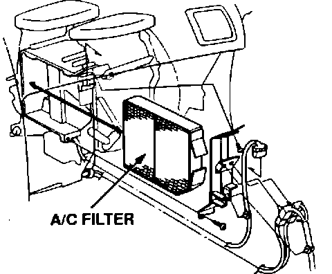

A/C - Evaporator Odor
Legend A/C Filters
In case you weren't already aware of it, the '92 Legend has a filter between the blower motor and the evaporator. This charcoal-impregnated filter (P/N 79370-SP0-H01) helps prevent evaporator odor, and it should be replaced every 15,000 miles (24,000 km) or 12 months.
While the filter helps prevent odor, it won't eliminate the odor if the evaporator becomes contaminated. If the evaporator appears (smells) contaminated, disassemble and clean it as described in the June '92 issue of S/N before installing a new filter.
One more bit of good news: If a '91 Legend comes in with A/C odor, you can retrofit it with this filter (the '91 blower housing was designed to accept it). Clean the evaporator first, however, to give the filter a fighting chance.